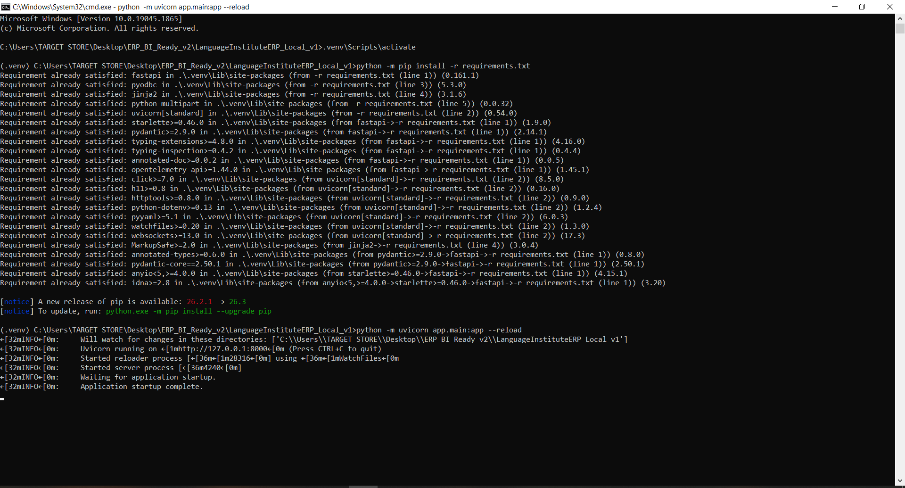
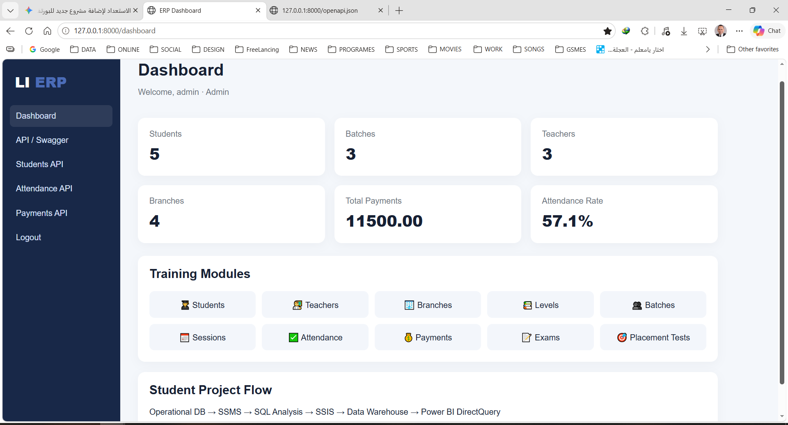
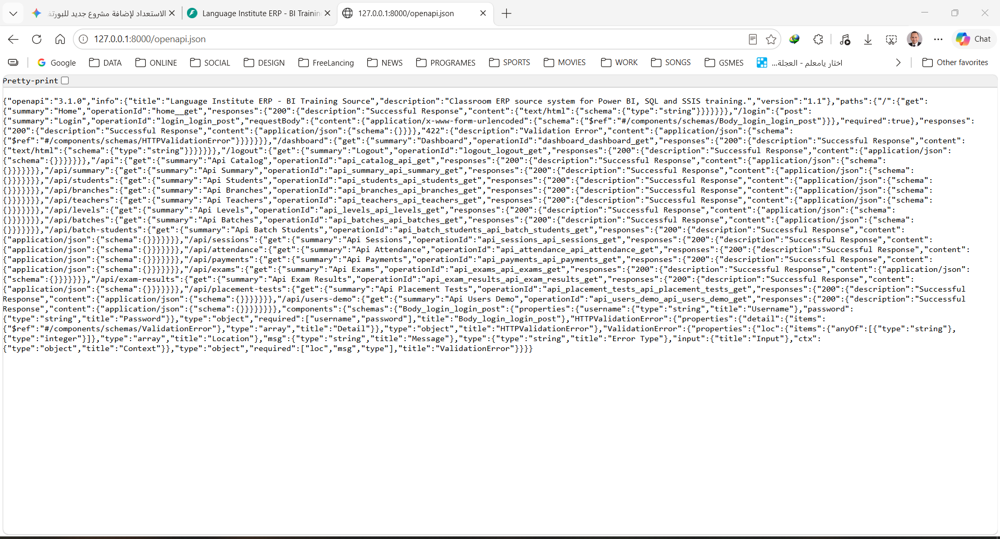
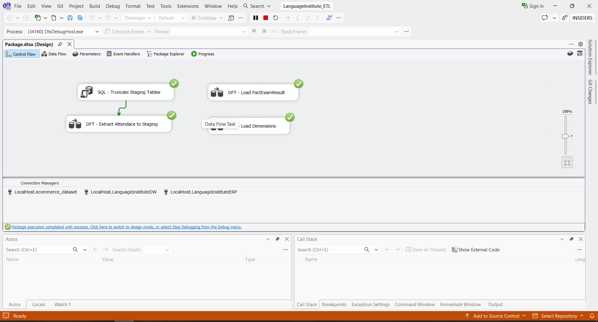
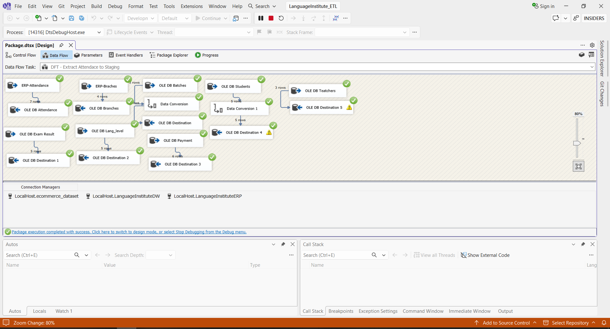
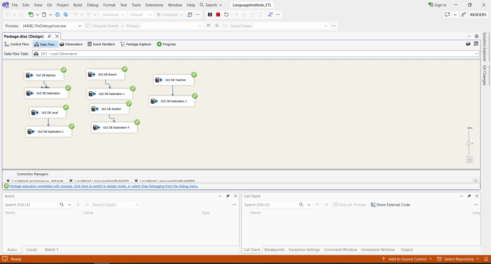
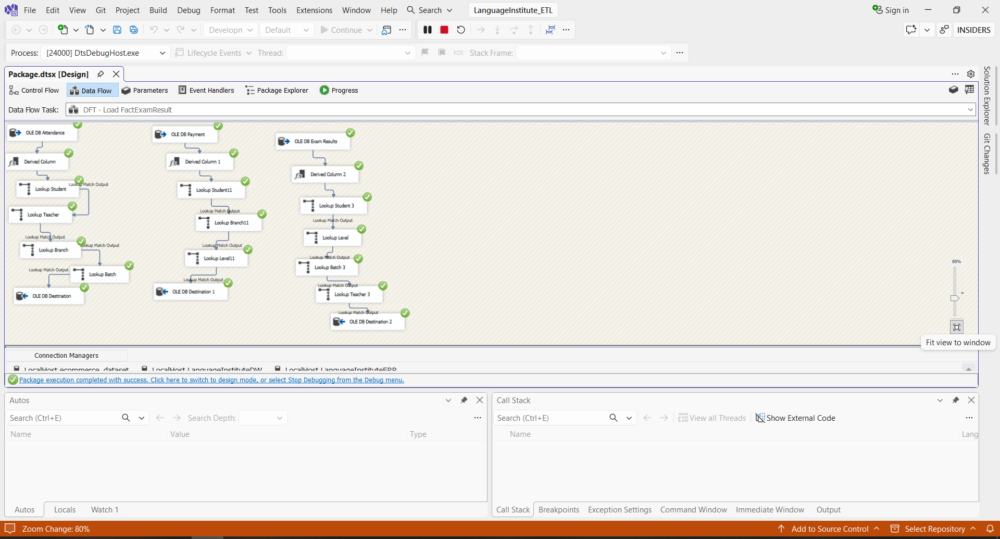
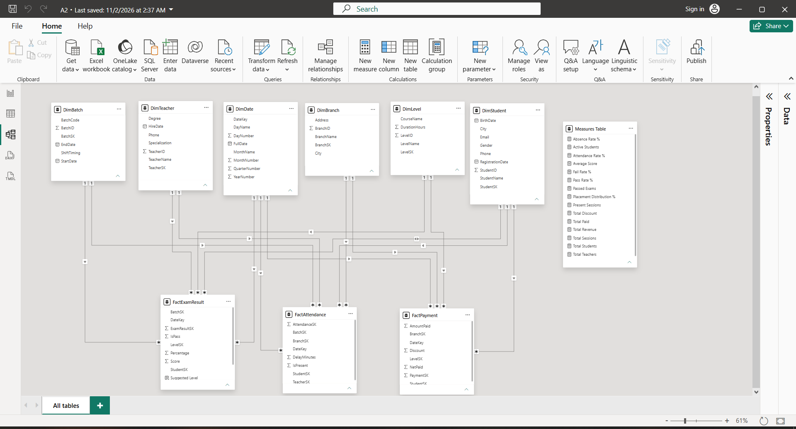
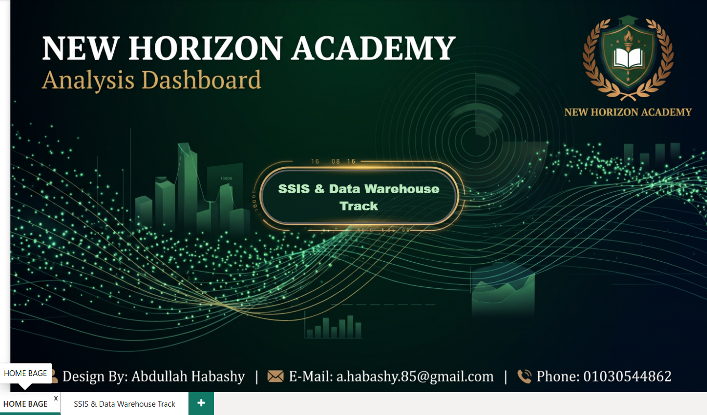
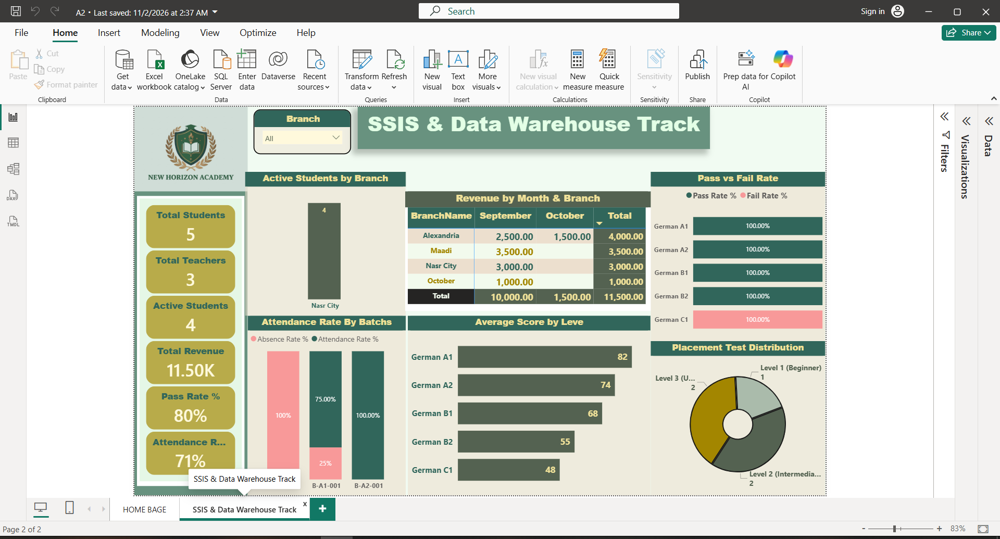

Case Study
New Horizon Academy – End-to-End BI & Data Warehouse
Executive Summary
Modern academic institutions face severe challenges when managing multi-branch operations: transactional systems (OLTP) are optimized for daily recording—such as student attendance, tuition payments, and exam scheduling—but fail when subjected to heavy analytical reporting.
In this flagship graduation project, I designed and implemented an enterprise-grade, end-to-end Business Intelligence solution for New Horizon Academy. The project follows an authentic production lifecycle: starting from hosting and running a live FastAPI ERP source system, orchestrating robust SSIS ETL pipelines (staging, data cleansing, and dimensional lookups), engineering an optimized Star Schema Data Warehouse in SQL Server, and delivering an executive, interactive Power BI analytical dashboard.
FastAPI & REST APIs
MS SQL Server (SSMS)
SSIS (Control Flow & Data Flow)
Data Warehousing
Star Schema
Power BI
DAX
Data Pipeline Architecture
FastAPI ERP Source → REST Endpoints / SQL Extraction → SSIS Staging & Cleansing → SSIS Dimension & Fact ETL (Lookups & SKs) → Star Schema DW → Power BI Tabular Model
Phase 01
Starting the Operational Source (FastAPI & ERP System)
1. Initializing the Local ERP Environment & API Endpoints
The journey started by spinning up the local operational environment using Python and Uvicorn. The ERP service exposes full transactional tables and RESTful endpoints (/openapi.json, /api/students, /api/attendance, /api/payments, etc.) simulating an active enterprise environment.
This architecture allowed verifying live transactions and comparing operational summaries directly against raw endpoints before staging them into SQL Server.

Live ERP Web Dashboard
The operational web dashboard provides real-time counts across branches, enrolled students, batches, and transactions. Direct reporting on this OLTP engine would degrade transactional throughput.

OpenAPI / REST Endpoints Catalog
Every business entity—from placement tests to batch attendance logs—is fully documented and accessible via structured JSON schemas, validating incoming data structures.

Phase 02
Enterprise ETL Pipelines with SSIS
2. Orchestrating Control Flow & Staging Architecture
In SQL Server Integration Services (SSIS), I architected a multi-stage execution pipeline within Package.dtsx:
- Staging Preparation: Executing an
Execute SQL Task to truncate temporary staging tables, guaranteeing idempotent, clean runs.
- Staging Data Flows: Extracting operational tables into raw staging tables with necessary data conversions.
- Dimension Loading: Populating Conformed Dimensions with surrogate keys.
- Fact Loading: Executing fact pipelines utilizing lookup transformations to resolve business keys into warehouse surrogate keys.

3. Ingestion & Staging Data Flow Task
The extraction data flow extracts tables across the operational database (Batches, Branches, Levels, Students, Teachers, Payments, Exam Results) into intermediate staging destinations with automated type mappings.

4. Dimension Loading Data Flow
Dimensions were processed to ensure unique entity tracking and maintain structural consistency across branches, teachers, students, batches, and course levels.

5. Fact Tables Population via Multi-Level Lookups
Populating the analytical fact tables required resolving relationships between operational primary keys and warehouse surrogate keys (SKs). Using Derived Column transformations and chained SSIS Lookups (Lookup Student, Lookup Teacher, Lookup Branch, Lookup Batch), the pipeline mapped transactional records directly into fact tables with sub-second processing.

Phase 03
Data Warehouse Modeling (Star Schema)
6. Dimensional Modeling & Schema Refinement
Early iterations began with an operational schema that had redundant cross-links. Based on dimensional modeling best practices, I redesigned the schema into a robust, clean Star Schema comprising three core fact tables surrounded by shared dimension tables:
- Fact Tables:
FactPayment (Tuition & Fees), FactAttendance (Daily Attendance & Delays), FactExamResult (Scores, Pass/Fail, Percentages).
- Conformed Dimensions:
DimDate, DimBranch, DimStudent, DimTeacher, DimBatch, and DimLevel.

Phase 04
Executive Power BI Dashboard & DAX Analytics
Interactive Dashboard Portal
The solution was branded for New Horizon Academy, complete with intuitive navigation buttons linking the Executive Overview to the underlying SSIS & Data Warehouse track.

Performance Metrics Summary
11.50K EGP
Total Collected Revenue
4
Active Academy Branches
Engineered using custom DAX formulas stored in a clean Measures Table (e.g., [Pass Rate %], [Attendance Rate %], [Average Score]).
Executive BI Dashboard View
The main analytics dashboard features branch-level revenue breakdown, monthly collections, attendance vs. absence rates per batch, average scores across language difficulty levels (German A1 to C1), and placement test distributions.

Phase 05
Insights & Strategic Recommendations
Key Business Insights
- Branch Revenue Variance: Nasr City (3,000 EGP) and Alexandria (4,000 EGP) lead tuition volume, while October branch represents an expansion opportunity (1,000 EGP).
- Academic Difficulty Curve: Student performance stays high in Beginner tiers (German A1 at 82 pts & German A2 at 74 pts) but drops in advanced levels (German C1 at 48 pts), indicating critical syllabus hurdles.
- Batch Attendance Discrepancy: Batch B-A1-001 achieved 75% attendance while other cohorts experienced up to 100% absence in unmonitored cycles.
Strategic Recommendations
- Automated Attendance Alerts: Trigger notifications when batch attendance slips below 70% to prevent dropouts before exam finals.
- Academic Support Clinics: Introduce targeted coaching sessions before B2 and C1 assessments to reverse the score regression.
- Incremental ETL Scheduling: Deploy the SSIS package to SQL Server Agent to automate nocturnal delta loads, providing daily fresh dashboards without manual intervention.
Project Assets & Source Files
Download the complete end-to-end project package, including the Power BI dashboard (.pbix), SSIS ETL package solution (.dtsx), SQL database creation scripts, and the FastAPI local ERP engine.